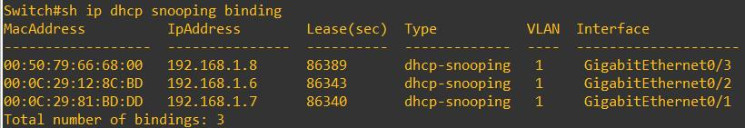
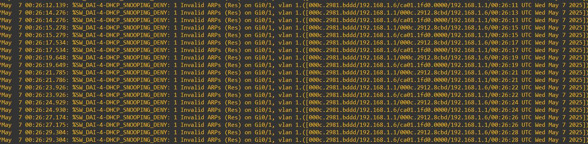
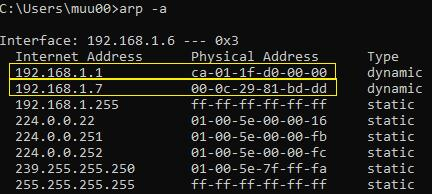
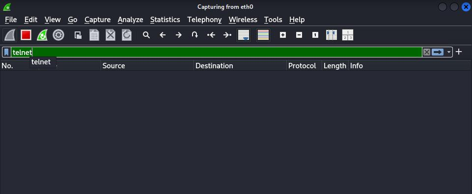

III. Phòng chống ARP Spoofing
1. DHCP Snooping

Hình 15: DHCP Snooping Binding Table
2. Dynamic ARP Inspection (DAI)

Hình 16: Cấu hình DAI

Hình 17: Switch chặn ARP giả

Hình 18: ARP sau khi bật DAI

Hình 19: Không còn thu được thông tin
Cảnh báo: Nội dung chỉ dành cho mục đích học thuật và thử nghiệm trong môi trường được cấp phép.